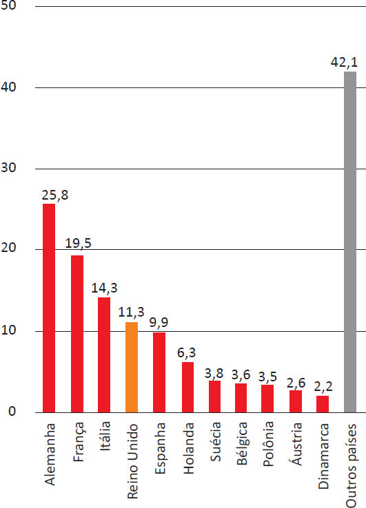
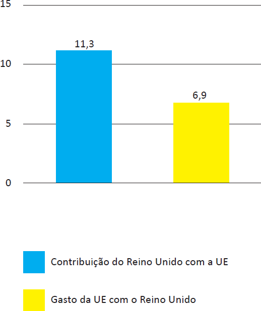

Os britânicos decidiram sair da União Europeia (UE). A decisão do referendo abalou os mercados financeiros em meio às incertezas sobre os possíveis impactos dessa saída.
Os gráficos a seguir apresentam, respectivamente, as contribuições dos países integrantes do bloco para a UE, em 2014, que somam € 144,9 bilhões de euros, e a comparação entre a contribuição do Reino Unido para a UE e a contrapartida dos gastos da UE com o Reino Unido.
Contribuições para a UE Dados de 2014, em € bilhões
Reino Unido e UE Dados de 2014, em € bilhões
Disponível em: http://www.g1.globo.com. Acesso em: 6 set. 2017 (adaptado).
Considerando o texto e as informações apresentadas nos gráficos acima, assinale a opção correta.